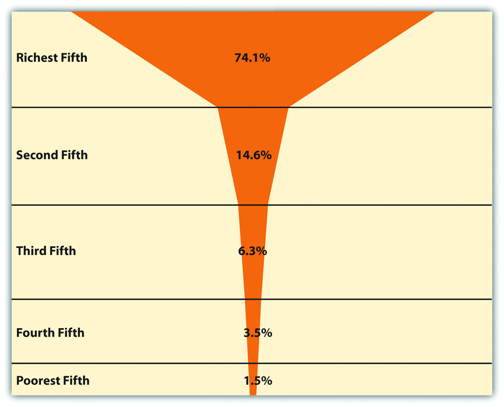
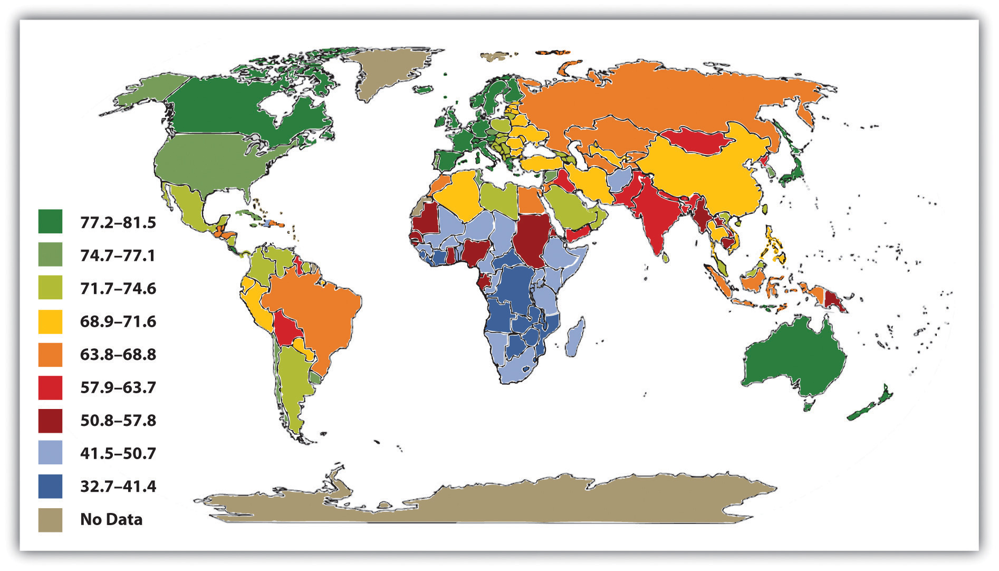
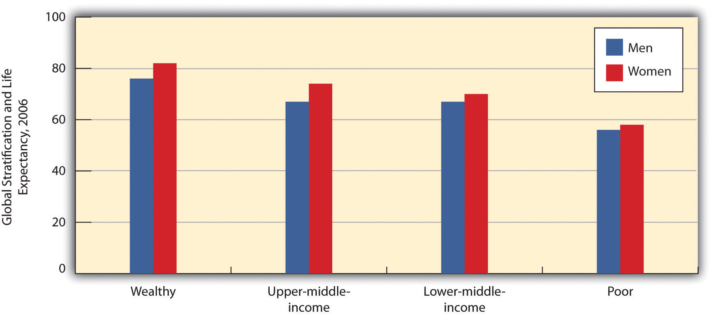
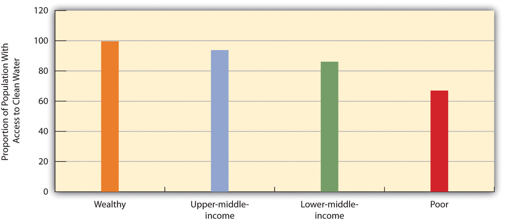
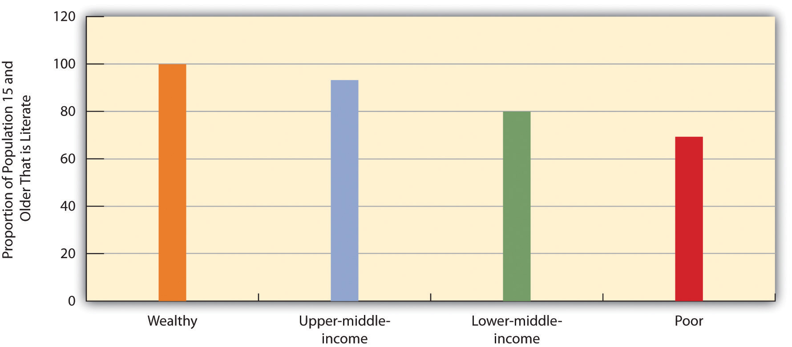
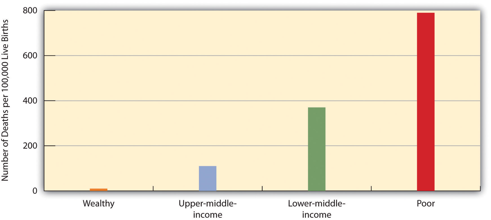

“Hunger Staring Country in the Face,” the headline said. Although India has been experiencing economic growth and is far from the poorest nation in the world, hunger remains a serious problem throughout the country. According to the news report, India’s economic numbers “could be masking the reality that growth has not translated into better lives for Indians.” More than 40% of Indians live below the international poverty line, defined by the World Bank as income under $1.25 per day. More than 200 million Indians, about one-fifth of the nation’s population, experience food insecurity, even though India is a leading producer of grains, fruits, and vegetables. More than 80 million Indian children are malnourished. According to the news report, India’s high hunger rate stems from its poverty, inadequate distribution of food, and political corruption. To help reduce hunger, the report said it was important to develop programs focused on women and children, who are especially likely to live in hunger. (Golikeri, 2010, p. MM28)Golikeri, P. (2010, March 26). Hunger staring country in the face. Daily News and Analysis (Mumbai). Retrieved from http://findarticles.com/p/news-articles/dna-daily-news-analysis-mumbai/mi_8111/is_20100326/hunger-staring-eye/ai_n52925597/?tag=content;col1
We learn several things from this news story about India: (a) poverty and hunger are rampant; (b) although India apparently has enough food to help feed its people, inadequate distribution and political corruption help keep food from the mouths of the hungry; (c) women and children bear the brunt of poverty and hunger; and, finally, (d) if India is far from the poorest nation and so many Indians are going hungry, conditions in poorer nations must be almost unimaginable. In all these respects, India’s situation tells us much about global stratification, the subject of this chapter. We first discuss the dimensions and extent of global stratification before turning to its impact and possible reasons for it. We will see that many nations around the world are in, and have long been in, a dire situation, but we will also examine possible strategies for improving their situation.
Stratification within the United States was discussed in Chapter 8 "Social Stratification". As we saw then, there is a vast difference between the richest and poorest segments of American society. Stratification also exists across the world. Global stratificationThe unequal distribution of wealth, power, prestige, resources, and influence among the world’s nations. refers to the unequal distribution of wealth, power, prestige, resources, and influence among the world’s nations. Put more simply, there is an extreme difference between the richest and poorest nations. A few nations, such as the United States, are very, very wealthy, while many more nations are very, very poor. Reflecting this latter fact, 40% of the world’s population, or about 2 billion people, lives on less than $2 per day (United Nations Development Programme, 2005).United Nations Development Programme. (2005). Human development report 2005. New York, NY: Author.
If the world were one nation, its median annual income (at which half of the world’s population is below this income and half is above it) would be only $1,700 (data from 2000). The richest fifth of the world’s population would have three-fourths of the world’s entire income, while the poorest fifth of the world’s population would have only 1.5% of the world’s income, and the poorest two-fifths would have only 5.0% of the world’s income (Dikhanov, 2005).Dikhanov, Y. (2005). Trends in global income distribution, 1970–2000, and scenarios for 2015. New York, NY: United Nations Development Programme. As Figure 9.1 "Global Income Distribution (Percentage of World Income Held by Each Fifth of World Population)" illustrates, this distribution of income resembles a champagne glass.
Figure 9.1 Global Income Distribution (Percentage of World Income Held by Each Fifth of World Population)
Source: Data from Dikhanov, Y. (2005). Trends in global income distribution, 1970–2000, and scenarios for 2015. New York, NY: United Nations Development Programme.
The game of Monopoly, used in Chapter 8 "Social Stratification" to illustrate U.S. stratification, again helps illustrate global stratification. Recall that if five people play Monopoly, each person would start out with $1,500. If each player represented one-fifth of the world’s population, and we divided the $7,500 according to the global distribution of income, then the richest player would begin with $5,558 of the $7,500 distributed to the five players combined. The next richest player would have $1,095. The third player would start with $473, while the next would have $263. The fifth and poorest player would begin with only $113. Figure 9.2 "Distribution of Starting Cash if Monopoly Resembled the Global Distribution of Income" depicts this huge disparity in money at the beginning of the game. Who would win? Who would be first to lose?
Figure 9.2 Distribution of Starting Cash if Monopoly Resembled the Global Distribution of Income

Source: Based on distribution of wealth data from Dikhanov, Y. (2005). Trends in global income distribution, 1970–2000, and scenarios for 2015. New York, NY: United Nations Development Programme.
As these figures make clear, the world is indeed stratified. To understand global stratification, it is helpful to classify nations into three or four categories based on their degree of wealth or poverty, their level of industrialization and economic development, and related factors. Over the decades, scholars and international organizations such as the United Nations and the World Bank have used various classification systems, or typologies.
One of the first typologies came into use after World War II and classified nations as falling into the First World, Second World, and Third World. The First World was generally the Western capitalist democracies of North America and of Europe and certain other nations (e.g., Australia, New Zealand, and Japan). The Second World was the communist nations belonging to the Soviet Union, while the Third World was all the remaining nations, almost all of them from Central and South America, Africa, and Asia. This classification was useful in distinguishing capitalist and communist countries and in calling attention to the many nations composing the Third World. However, it was primarily a political classification rather than a stratification classification. This problem, along with the demise of the Soviet Union by the end of 1991, caused this typology to fall out of favor.
A replacement typology placed nations into developed, developing, and undeveloped categories, respectively. Although this typology was initially popular, critics said that calling nations “developed” made them sound superior, while calling nations “undeveloped” made them sound inferior. Although this classification scheme is still used, it, too, has begun to fall out of favor.
Today a popular typology simply ranks nations into groups called wealthy (or high-income) nations, middle-income nations, and poor (or low-income) nations, based on measures such as gross domestic product (GDP) per capita (the total value of a nation’s goods and services divided by its population). This typology has the advantage of emphasizing the most important variable in global stratification: how much wealth a nation has. At the risk of being somewhat simplistic, the other important differences among the world’s nations all stem from their degree of wealth or poverty. Figure 9.3 "Global Stratification Map" depicts these three categories of nations (with the middle category divided into upper-middle and lower-middle). As should be clear, whether a nation is wealthy, middle-income, or poor is heavily related to the continent on which it is found.
Figure 9.3 Global Stratification Map
Source: Adapted from UNEP/GRID-Arendal Maps and Graphics Library. (2009). Country income groups (World Bank classification). Retrieved from http://maps.grida.no/go/graphic/country-income-groups-world-bank-classification.
Typologies based on GDP per capita or similar economic measures are very useful, but they also have a significant limitation. Nations can rank similarly on GDP per capita (or another economic measure) but still differ in other respects. One nation might have lower infant mortality, another might have higher life expectancy, and a third might have better sanitation. Recognizing this limitation, organizations such as the United Nations Development Programme (UNDP) use typologies based on a broader range of measures than GDP per capita. A very popular typology is the UNDP’s Human Development Index (HDI), which is a composite measure of a nation’s income, health, and education. This index is based on a formula that combines a nation’s GDP per capita as a measure of income; life expectancy at birth as a measure of health; and the adult literacy rate and enrollment in primary, secondary, and higher education as measures of education. Figure 9.4 "International Human Development, 2008" shows how nations rank according to the HDI. As will be evident, this map looks fairly similar to the map in Figure 9.3 "Global Stratification Map" that was based only on GDP per capita; the nations that rank high on human development are the wealthiest nations, and those that rank lowest on human development, such as Ethiopia and Rwanda, are the poorest nations.
Figure 9.4 International Human Development, 2008

Source: Adapted from United Nations Development Programme. (2010). International human development indicators. Retrieved from http://hdr.undp.org/en/data/map.
This similarity prompts some observers to say that the HDI is not really that much of an improvement over typologies based only on GDP per capita or similar economic measures. Still, the HDI has been widely used since the 1990s and reminds us that nations differ dramatically not only in their economic well-being but also in their social well-being. However, because health, education, and other social indicators do depend so heavily on wealth, our discussion of global stratification for the remainder of this chapter will use the familiar classification of wealthy, middle-income, and poor nations. We now highlight the basic differences among these three categories of nations.
The wealthy nations are the most industrialized nations, and they consist primarily of the nations of North America and Western Europe; Australia, Japan, and New Zealand; and certain other nations in the Middle East and Asia (e.g., Japan and Singapore). Many of them were the first nations to become industrialized starting in the 19th century, when the Industrial Revolution began, and their early industrialization certainly contributed to the great wealth they enjoy today. Yet it is also true that many Western European nations were also wealthy before the Industrial Revolution, thanks in part to the fact that they had been colonial powers and acquired wealth from the resources of the lands they colonized.
Although wealthy nations constitute only about one-sixth of the world’s population, they hold about four-fifths of the world’s entire wealth. They are the leading nations in industry, high finance, and information technology and exercise political, economic, and cultural influence across the planet. As the global economic crisis that began in 2007 illustrates, when the economies of just a few wealthy nations suffer, the economies of other nations and indeed of the entire world can suffer. Although each of the world’s wealthy nations is internally stratified to a greater or lesser degree, these nations as a group live a much more comfortable existence than middle-income nations and, especially, poor nations. People in wealthy nations are healthier and more educated, and they enjoy longer lives. At the same time, wealthy nations use up more than their fair share of the world’s natural resources, and their high level of industrialization causes them to pollute and otherwise contribute to climate change to a far greater degree than is true of nations in the other two categories.
Middle-income nations are generally less industrialized than wealthy nations but more industrialized than poor nations. They consist primarily of nations in Central and South America, Eastern Europe, and parts of Africa and Asia and constitute about one-third of the world’s population. Many of these nations have abundant natural resources but still have high levels of poverty, partly because political and economic leaders sell the resources to wealthy nations and keep much of the income from these sales for themselves.
There is much variation in income and wealth within the middle-income category, even within the same continent. In South America, for example, the gross national income per capita in Chile, adjusted to U.S. dollars, is $13,270 (2008 figures), compared to only $4,140 in Bolivia (Population Reference Bureau, 2009).Population Reference Bureau. (2009). 2009 world population data sheet. Washington, DC: Author. Many international organizations and scholars thus find it useful to further divide middle-income nations into upper-middle-income nations and lower-middle-income nations. Not surprisingly, many more people in the latter nations live in dire economic circumstances than those in the former nations. In Bolivia, for example, 30% of the population lives on less than $2 per day, compared to only 5% in Chile.
Poor nations are certainly the least industrialized and most agricultural of all the world’s countries. This category consists primarily of nations in Africa and parts of Asia and constitutes roughly half of the world’s population. They have some natural resources that political leaders again sell to wealthier nations while keeping much of the income they gain from these sales. Many of these nations rely heavily on one or two crops, and if weather conditions render a crop unproductive in a particular season, the nations’ hungry become even hungrier. By the same token, if economic conditions reduce the price of a crop or other natural resource, the income from exports of these commodities plummets, and these already poor nations become even poorer. An example of this latter problem occurred in Vietnam, a leading exporter of coffee. As coffee prices rose during the 1990s, Vietnam expanded its coffee production by greatly increasing the amount of acreage devoted to growing coffee beans. When the price of coffee plummeted in the early 2000s, Vietnam’s coffee industry, including the farmers who grow coffee, suffered huge losses. Many farmers destroyed their coffee plants to be able to grow other crops they thought would be more profitable (Huy, 2010).Huy, N. Q. (2010). Coffee production and consumption in Vietnam. Retrieved from http://www.docstoc.com/docs/27139628/COFFEE-PRODUCTION-AND-CONSUMPTION-IN-VIETNAM-Prepared-by-Nguyen- Because farmers in poor nations often change their crops in this manner for economic reasons, it is difficult for these nations to sustain a stable agricultural industry.
By any standard, people in these nations live a desperate existence in the most miserable conditions possible. They suffer from AIDS and other deadly diseases, live on the edge of starvation, and lack indoor plumbing, electricity, and other modern conveniences that most Americans take for granted. Most of us have seen unforgettable photos or video footage of African children with stick-thin limbs and distended stomachs reflecting severe malnutrition. We revisit their plight in Chapter 9 "Global Stratification", Section 9.2 "The Impact of Global Poverty".
In addition to classifying nations according to their ranking on a stratification typology, scholars and international organizations also determine the level of poverty in each nation. This determination provides valuable information beyond a nation’s GDP per capita or similar measure of wealth. Wealth and poverty are, of course, highly correlated: generally speaking, the wealthier a nation, the lower its level of poverty. However, this correlation is not perfect, and considering nations only in terms of their wealth may obscure important differences in their levels of poverty. For example, two nations, which we will call Nation A and Nation B, may have similar GDP per capita. In Nation A, wealth from its GDP is fairly evenly distributed, and relatively few people are poor. In Nation B, almost all wealth is held by a small number of incredibly rich people, and many people are poor. A nation’s level of poverty thus tells us what proportion of the population is living in dire straits, regardless of the nation’s level of wealth.
The measurement of global poverty is important for additional reasons (Haughton & Khandker, 2009).Haughton, J., & Khandker, S. R. (2009). Handbook on poverty and inequality. Washington, DC: World Bank. First, political and economic officials will not recognize the problem of poverty and try to do something about it unless they have reliable poverty data to motivate them to do so and to guide their decisions. As two experts on international poverty note, “It is easy to ignore the poor if they are statistically invisible” (Haughton & Khandker, 2009, p. 3).Haughton, J., & Khandker, S. R. (2009). Handbook on poverty and inequality. Washington, DC: World Bank. Second, valid measures of poverty reveal which regions of the world are poorest and which people in a given nation are poorest in terms of household characteristics (e.g., households headed by a single woman), location (e.g., region of country or urban vs. rural), and other factors. This type of knowledge enables antipoverty programs and strategies to be focused on the locations and people in those locations who are most in need of help. Third, valid measures of poverty enable officials and policymakers to know how well efforts to help the poor are working, as a poverty measure after some intervention can be compared to the poverty measure before the intervention.
Although it is important, then, to measure the poverty level of the nations of the world, it is rather difficult to do so. One problem is that the different nations have different standards of living. If an American woman who has a family to feed earns $10 per day, or about $3,650 per year, she and her family are very poor by American standards. However, a woman who earns the equivalent of $10 per day in many poor nations would be very wealthy by those nations’ standards, and she would be able to afford many more goods and services (because they cost so much less in those nations than in the United States) than her American counterpart.
Another problem was first encountered in Chapter 8 "Social Stratification"’s discussion of poverty in the United States. No matter what income level might be used as an “official” poverty line for the nations of the world, this level is inevitably an arbitrary poverty line. An individual or family whose income is just a bit above the official poverty line is not counted as being officially poor, even though they are still poor for all practical purposes. Moreover, the most common measures of official global poverty ignore episodic poverty. As Chapter 8 "Social Stratification" explained, individuals and families may move into and out of poverty within a given year or two, often more than once. Measures of global poverty (as well as measures of U.S. poverty) determine the number of poor people at one point in time and thus provide an underestimate of the number of people who are poor at least once in a given year or two years.
A third problem concerns exactly what is meant by poverty. Although poverty is usually thought of in monetary terms, some analysts emphasize that poverty involves things in addition to money, including inadequate nutrition, illiteracy, and other correlates of poverty. These analysts favor using measures such as calorie consumption or degree of malnutrition as indicators of poverty. Although these and related measures are indeed often used, monetary measures are most common and will be emphasized here.
Despite these problems, measures of global poverty are still useful for the reasons stated earlier. How, then, is global poverty measured? A very common and popular measure is one used by the World Bank, an international institution, funded by wealthy nations, that provides loans, grants, and other aid to help poor and middle-income nations develop their infrastructure and thus reduce their poverty. Each year the World Bank publishes its World Development Report, which, as its name implies, provides statistics and other information on the economic and social well-being of the globe’s almost 200 nations. The World Bank puts the official global poverty line (which is considered a measure of extreme poverty) at income under $1.25 per person per day, which amounts to about $456 yearly per person or $1,825 for a family of four. According to this measure, 1.4 billion people, making up more than one-fifth of the world’s population and more than one-fourth of the population of developing (poor and middle-income) nations, are poor. This level of poverty rises to 40% of South Asia and 51% of sub-Saharan Africa (Haughton & Khandker, 2009).Haughton, J., & Khandker, S. R. (2009). Handbook on poverty and inequality. Washington, DC: World Bank.
In view of the measurement problems noted earlier, the actual number of poor people worldwide is certainly much higher than this figure. Note also that the official global poverty line is based on an exceedingly low income level. By this standard, most of the millions of Americans commonly considered to be poor (see Chapter 8 "Social Stratification") would not be considered poor. Moreover, despite the lower standard of living in developing nations, this income level is so low as to underestimate the actual number of poor people in some of these nations.
Returning to the issue of episodic poverty discussed earlier, the World Bank has begun to emphasize the concept of vulnerability to povertyA significant probability that people who are not officially poor will become poor within the next year., which refers to a significant probability that people who are not officially poor will become poor within the next year. Determining vulnerability to poverty is important because it enables antipoverty strategies to be aimed at those most at risk for sliding into poverty, with the hope of preventing them from doing so.
Vulnerability to poverty appears widespread; in several developing nations, about one-fourth of the population is always poor, while almost one-third is sometimes poor, or vulnerable to poverty, slipping into and out of poverty. In these nations, then, more than half the population is always or sometimes poor. Haughton and Khandker (2009, p. 246)Haughton, J., & Khandker, S. R. (2009). Handbook on poverty and inequality. Washington, DC: World Bank. summarize this situation: “As typically defined, vulnerability to poverty is more widespread than poverty itself. A wide swathe of society risks poverty at some point of time; put another way, in most societies, only a relatively modest portion of society may be considered as economically secure.”
The United Nations Development Programme (UNDP), which developed the Human Development Index, discussed earlier, to measure global stratification, also developed a similar measure, the Human Poverty Index (HPI), to measure global poverty, and it has reported this measure since the 1990s. This measure reflects UNDP’s belief that poverty means more than a lack of money and that measures of poverty must include nonmonetary components of social well-being. Accordingly, the HPI incorporates measures of the following indicators for developing nations: (a) the probability of not surviving to age 40, (b) the percentage of adults who are illiterate, (c) the percentage of people without access to clean water, and (d) the percentage of underweight children. In UNDP’s 2009 Human Development Report, the five poorest countries according to HPI were Afghanistan, Niger, Mali, Chad, and Burkina Faso, with more than half the population in each of these countries classified as poor (United Nations Development Programme, 2009).United Nations Development Programme. (2009). Human development report 2009. New York, NY: Author.
Although the HPI has been very useful, it was recently replaced by a more comprehensive measure, the Multidimensional Poverty Index (MPI). The MPI incorporates a range of deprivation measures applied to each nation’s households that is fuller than that of the HPI. Households are considered poor according to their composite score on three categories of indicators of deprivation:
Health
Education
Standard of living
A person is considered poor if he or she experiences deprivation in any of the following combinations of indicators:
When the MPI is used to measure poverty in 104 developing nations, 1.7 billion people, amounting to one-third the population of these nations, live in poverty. Half of the poor people on the planet according to the MPI live in South Asia, and one-fourth live in Africa (Alkire & Santos, 2010).Alkire, S., & Santos, M. E. (2010). Acute multidimensional poverty: A new index for developing countries. Oxford, England: Oxford Poverty & Human Development Initiative, University of Oxford. The five poorest nations according to the MPI are all African: Niger, Ethiopia, Mali, Burkina Faso, and Burundi. In these nations, at least 85% of the population is poor.
Although monetary and index measures of global poverty yield somewhat different results, the measures are still fairly highly correlated, and they all indicate that the poorest regions of the world are Africa and South Asia. These measures have played an essential role in our understanding of global poverty and in international efforts to address it and its consequences.
As first discussed in Chapter 8 "Social Stratification", another dimension of stratification is economic inequality, which refers to the gap between the richest and poorest segments of society. We saw then that the United States has more economic inequality than other Western democracies, as the income and wealth difference between the richest and poorest people in the United States is greater than that in these other nations.
As this discussion suggested, to understand stratification it is important to understand economic inequality. Global economic inequality (hereafter global inequality) has two dimensions. The first dimension involves the extremely large economic gap between the wealthy and poor nations of the world (Neckerman & Torche, 2007).Neckerman, K. M., & Torche, F. (2007). Inequality: Causes and consequences. Annual Review of Sociology, 33(1), 335–357. We saw evidence of this gap in our earlier Monopoly discussion: the richest one-fifth of nations have almost 75% of the world’s income, while the poorest fifth of nations have only 1.5% of the world’s income. Dividing the larger figure by the smaller figure (75 ÷ 1.5) yields a very high income-gap ratio of 50: the income of the richest fifth of nations is 50 times greater than the income of the poorest fifth of nations. By comparison, in the United States the income of the richest fifth of the population is 11.5 times higher than the income of the poorest fifth (see Chapter 8 "Social Stratification"). Although economic inequality within the United States is greater than its Western counterparts, economic inequality between the richest and poorest nations is much greater yet.
The second form of global inequality involves comparisons of the degree of economic inequality found within each nation. This type of information adds a valuable complement to measures of wealth (e.g., GDP per capita) and measures of poverty (e.g., the World Bank’s $1.25 per person per day). For example, Nation A and Nation B may have similar levels of poverty. In Nation A, however, poverty is evenly distributed throughout the population, and almost everyone is poor. In Nation B, a small segment of the population is very rich, while a much larger segment is very poor. Nation B would thus have more economic inequality than Nation A.
As our comparison of the United States with other Western democracies illustrated, some nations have higher levels of economic inequality, and some nations have lower levels. Around the world, inequality is generally higher in agricultural nations (or those that are poor or middle-income) and lower in industrial nations (or the wealthiest ones in the world). (See Chapter 5 "Social Structure and Social Interaction".) In agricultural societies, a small elite usually owns most of the land and is very wealthy, and the masses of people either work for the elite or on their own small, poor farms. Many of these societies thus have a high level of economic inequality; however, the poorest of these societies are so poor that there is less wealth for an elite to control, and inequality in these societies thus tends to be somewhat lower. Industrial societies have lower inequality because they have higher literacy rates and more political rights and because they generally provide more opportunity for people to move up the socioeconomic ladder (Nolan & Lenski, 2009).Nolan, P., & Lenski, G. (2009). Human societies: An introduction to macrosociology (11th ed.). Boulder, CO: Paradigm.
The most popular measure of economic inequality, and one used by the World Bank, is the Gini coefficient. Its calculation need not concern us, but it ranges from 0 to 1, where 0 means that income is the same for everyone (no economic inequality at all, or perfect equality), and 1 means that one person has all the income (perfect inequality). Thus the nearer the Gini coefficient is to 1, the higher the degree of a nation’s economic inequality.
Figure 9.5 "Gini Coefficients, 2007–2008" shows Gini coefficients around the world; economic inequality is indeed higher in the agricultural regions of Latin America and the Caribbean, Africa, South Asia, and elsewhere than in the industrial region of Western Europe. In the developing world, the region of Latin America and the Caribbean has a more advanced agricultural economy than other regions, and it also has the highest degree of inequality, with a small elite owning a great amount of land (Hoffman & Centeno, 2003).Hoffman, K., & Centeno, M. A. (2003). The lopsided continent: Inequality in Latin America. Annual Review of Sociology, 29(1), 363–390.
Figure 9.5 Gini Coefficients, 2007–2008
Another popular measure of economic inequality is the decile dispersion ratio. Here the average income or expenditure of people in the richest 10% of a nation is divided by the average income or expenditure of people in the poorest 10% of a nation; the higher the ratio, the greater the income inequality. This measure is cruder than the Gini coefficient because it does not consider the income distribution of the remaining 80% of a nation, but its ratio is more understandable by laypeople. For example, a ratio of 12 means that the average income or expenditure of the richest tenth of a nation’s population is 12 times greater than the average income or expenditure of the poorest tenth of a nation’s population.
Figure 9.6 "Global Income Inequality (Average Ratio of Income or Expenditure of Wealthiest Tenth of Population to Income or Expenditure of Poorest Tenth)" depicts the average decile dispersion ratio for four groups of nations as determined by the United Nations’ HDI: very high development, high development, medium development, and low development. These four groups roughly correspond to wealthy nations (primarily industrial), high-middle-income nations (industrial and agricultural), low-middle-income nations (primarily agricultural), and poor nations (agricultural), respectively. As the figure indicates, overall inequality as measured by the decile dispersion ratio is once again lower for wealthy (industrial) nations than for less wealthy nations that are more agricultural.
Figure 9.6 Global Income Inequality (Average Ratio of Income or Expenditure of Wealthiest Tenth of Population to Income or Expenditure of Poorest Tenth)

Source: Author’s analysis of data from United Nations Development Programme. (2009). Human development report 2009. New York, NY: Author.
Behind all the numbers for poverty and inequality presented in the preceding pages are the lives of more than 1.4 billion desperately poor people across the world who live in some of the worst conditions possible. AIDS, malaria, starvation, and other deadly diseases are common. Many children die before reaching adolescence, and many adults die before reaching what in the richest nations would be considered middle age. Many people in the poorest nations are illiterate, and a college education remains as foreign to them as their way of life would be to us. Occasionally, we see the world’s poor in TV news reports or in film documentaries before they fade quickly from our minds. Meanwhile, millions of people on our planet die every year because they do not have enough to eat, because they lack access to clean water or adequate sanitation, or because they lack access to medicine that is found in every CVS, Rite Aid, and Walgreens in the United States.
As noted earlier, the United Nations Development Programme, the World Bank, and other international agencies issue annual reports on human development indicators that show the impact of living in a poor nation. This section begins with a look at some of the most important of these indicators.
The status of a nation’s health is commonly considered perhaps the most important indicator of human development. When we look around the world, we see that global poverty is literally a matter of life and death. The clearest evidence of this fact comes from data on life expectancyThe average number of years that a nation’s citizens can be expected to live., the average number of years that a nation’s citizens can be expected to live. Life expectancy certainly differs within each nation, with some people dying younger and others dying older, but poverty and related conditions affect a nation’s overall life expectancy to a startling degree.
A map of global life expectancy appears in Figure 9.7 "Average Life Expectancy Across the Globe (Years)". Life expectancy is highest in North America, Western Europe, and certain other regions of the world and lowest in Africa and South Asia, where life expectancy in many nations is some 30 years shorter than in other regions. Another way of visualizing the relationship between global poverty and life expectancy appears in Figure 9.8 "Global Stratification and Life Expectancy, 2006", which depicts average life expectancy for wealthy nations, upper-middle-income nations, lower-middle-income nations, and poor nations. Men in wealthy nations can expect to live 76 years on average, compared to only 56 in poor nations; women in wealthy nations can expect to live 82 years, compared to only 58 in poor nations. Life expectancy in poor nations is thus 20 and 24 years lower, respectively, for the two sexes.
Figure 9.7 Average Life Expectancy Across the Globe (Years)
Source: Adapted from Global Education Project. (2004). Human conditions: World life expectancy map. Retrieved from http://www.theglobaleducationproject.org/earth/human-conditions.php.
Figure 9.8 Global Stratification and Life Expectancy, 2006
Source: Data from World Bank. (2009). World development report 2009. Washington, DC: Author.
A key contributor to life expectancy and also a significant indicator of human development in its own right is child mortalityThe number of children who die before age 5 per 1,000 children., the number of children who die before age 5 per 1,000 children. As Figure 9.9 "Global Stratification and Child Mortality, 2006" shows, the rate of child mortality in poor nations is 135 per 1,000 children, meaning that 13.5% of all children in these nations die before age 5. In a few African nations, child mortality exceeds 200 per 1,000. In contrast, the rate in wealthy nations is only 7 per 1,000. Children in poor nations are thus about 19 times (13.5 ÷ 0.7) more likely to die before age 5 than children in wealthy nations.
Figure 9.9 Global Stratification and Child Mortality, 2006

Source: Data from World Bank. (2009). World development report 2009. Washington, DC: Author.
Two other important indicators of a nation’s health are access to adequate sanitation (disposal of human waste) and access to clean water. When people lack adequate sanitation and clean water, they are at much greater risk from life-threatening diarrhea, from serious infectious diseases such as cholera and typhoid, and from parasitic diseases such as schistosomiasis (World Health Organization, 2010).World Health Organization. (2010). Children’s environmental health. Retrieved from http://www.who.int/ceh/risks/cehwater2/en/index.html About 2.4 billion people around the world, almost all of them in poor and middle-income nations, do not have adequate sanitation, and more than 2 million, most of them children, die annually from diarrhea. More than 40 million people worldwide, almost all of them again in poor and middle-income nations, suffer from a parasitic infection caused by flatworms.
As Figure 9.10 "Global Stratification and Access to Adequate Sanitation, 2006" and Figure 9.11 "Global Stratification and Access to Clean Water, 2006" show, access to adequate sanitation and clean water is strongly related to national wealth. Poor nations are much less likely than wealthier nations to have adequate access to both sanitation and clean water. Adequate sanitation is virtually universal in wealthy nations but is available to only 38% of people in poor nations. Clean water is also nearly universal in wealthy nations but is available to only 67% of people in poor nations.
Figure 9.10 Global Stratification and Access to Adequate Sanitation, 2006

Source: Data from World Bank. (2010). Health nutrition and population statistics. Retrieved from http://databank.worldbank.org/ddp/home.do?Step=2&id=4.
Figure 9.11 Global Stratification and Access to Clean Water, 2006
Source: Data from World Bank. (2010). Health nutrition and population statistics. Retrieved from http://databank.worldbank.org/ddp/home.do?Step=2&id=4.
About one-fifth of the population of poor nations, some 800 million individuals altogether, are malnourished.
Photo courtesy of Dr. Lyle Conrad at the Centers for Disease Control and Prevention, ID# 6874 from http://phil.cdc.gov/phil/.
Another health indicator is malnutritionThe status of being inadequately nourished, arising from a lack of good food combined with infections and diseases such as diarrhea that sap the body of essential nutrients.. This problem is caused by a lack of good food combined with infections and diseases such as diarrhea that sap the body of essential nutrients. About one-fifth of the population of poor nations, or about 800 million individuals, are malnourished; looking just at children, in developing nations more than one-fourth of children under age 5, or about 150 million altogether, are underweight. Half of all these children live in only three nations: Bangladesh, India, and Pakistan; almost half the children in these and other South Asian nations are underweight. Children who are malnourished are at much greater risk for fat and muscle loss, brain damage, blindness, and death; perhaps you have seen video footage of children in Africa or South Asia who are so starved that they look like skeletons. Not surprisingly, child malnutrition contributes heavily to the extremely high rates of child mortality that we just examined and is estimated to be responsible for more than 5 million deaths of children annually (UNICEF, 2006; World Health Organization, 2010).UNICEF. (2006). Progress for children: A report card on nutrition. New York, NY: Author; World Health Organization. (2010). Children’s environmental health. Retrieved from http://www.who.int/ceh/risks/cehwater2/en/index.html The “Sociology Making a Difference” box further discusses the issue of world hunger.
World Hunger and the Scarcity Fallacy
A popular belief is that world hunger exists because there is too little food to feed too many people in poor nations in Africa, Asia, and elsewhere. Sociologists Stephen J. Scanlan, J. Craig Jenkins, and Lindsey Peterson (2010)Scanlan, S. J., Jenkins, J. C., & Peterson, L. (2010). The scarcity fallacy. Contexts, 9(1), 34–39. call this belief the “scarcity fallacy.” According to these authors, “The conventional wisdom is that world hunger exists primarily because of natural disasters, population pressure, and shortfalls in food production” (p. 35). However, this conventional wisdom is mistaken, as world hunger stems not from a shortage of food but from the inability to deliver what is actually a sufficient amount of food to the world’s poor. As Scanlan and colleagues note,
A good deal of thinking and research in sociology suggests that world hunger has less to do with the shortage of food than with a shortage of affordable or accessible food. Sociologists have found that social inequalities, distribution systems, and other economic and political factors create barriers to food access. (p. 35)
This sociological view has important implications for how the world should try to reduce global hunger, say these authors. International organizations such as the World Bank and several United Nations agencies have long believed that hunger is due to food scarcity, and this belief underlies the typical approaches to reducing world hunger that focus on increasing food supplies with new technologies and developing more efficient methods of delivering food. But if food scarcity is not a problem, then other approaches are necessary.
Scanlan and colleagues argue that food scarcity is, in fact, not the problem that international agencies and most people believe it to be:
The bigger problem with emphasizing food supply as the problem, however, is that scarcity is largely a myth. On a per capita basis, food is more plentiful today than any other time in human history.…[E]ven in times of localized production shortfalls or regional famines there has long been a global food surplus. (p. 35)
If the problem is not a lack of food, then what is the problem? Scanlan and colleagues argue that the real problem is a lack of access to food and a lack of equitable distribution of food: “Rather than food scarcity, then, we should focus our attention on the persistent inequalities that often accompany the growth in food supply” (p. 36).
What are these inequalities? Recognizing that hunger is especially concentrated in the poorest nations, the authors note that these nations lack the funds to import the abundant food that does exist. These nations’ poverty, then, is one inequality that leads to world hunger, but gender and ethnic inequalities are also responsible. For example, women around the world are more likely than men to suffer from hunger, and hunger is more common in nations with greater rates of gender inequality (as measured by gender differences in education and income, among other criteria). Hunger is also more common among ethnic minorities not only in poor nations but also in wealthier nations. In findings from their own research, these sociologists add, hunger lessens when nations democratize, when political rights are protected, and when gender and ethnic inequality is reduced.
If inequality underlies world hunger, they add, then efforts to reduce world hunger will succeed only to the extent that they recognize the importance of inequality in this regard: “To get at inequality, policy must give attention to democratic governance and human rights, fixing the politics of food aid, and tending to the challenges posed by the global economy” (p. 38). For this to happen, they say, food must be upheld as a “fundamental human right.” More generally, world hunger cannot be effectively reduced unless and until ethnic and gender inequality is reduced. Scanlan and colleagues conclude,
The challenge, in short, is to create a more equitable and just society in which food access is ensured for all. Food scarcity matters. However, it is rooted in social conditions and institutional dynamics that must be the focus of any policy innovations that might make a real difference. (p. 39)
In calling attention to the myth of food scarcity and the inequalities that contribute to world hunger, Scanlan and colleagues point to better strategies for addressing this significant international problem. Once again, sociology is making a difference.
Moving from the area of health, a final indicator of human development is adult literacyPercentage of people 15 and older who can read and write a simple sentence., the percentage of people 15 and older who can read and write a simple sentence. Once again we see that people in poor and middle-income nations are far worse off (see Figure 9.12 "Global Stratification and Adult Literacy, 2008"). In poor nations, only about 69% of adults 15 and older can read and write a simple sentence. The high rate of illiteracy in poor nations not only reflects their poverty but also contributes to it, as people who cannot read and write are obviously at a huge disadvantage in the labor market.
Figure 9.12 Global Stratification and Adult Literacy, 2008
Source: Data from World Bank. (2010). Health nutrition and population statistics. Retrieved from http://databank.worldbank.org/ddp/home.do?Step=2&id=4.
Before we leave the issue of human development, it is instructive to compare the United States, an extremely wealthy nation, with one poor nation from Africa, Uganda, on some economic and human development indicators as presented in Table 9.1 "The United States and Uganda". As will be obvious, Americans and Ugandans live very different lives, notwithstanding the high degree of poverty found in the United States compared to other wealthy nations. The typical American lives a comfortable life that the typical Ugandan can only dream of, while the typical Ugandan lives a life that the typical American would find only in her or his worst nightmare.
Table 9.1 The United States and Uganda
| United States | Uganda | |
|---|---|---|
| Gross national income per capita ($) | 46,970 | 1,140 |
| Population living below $2 per day (%) | — | 76 |
| Infant mortality rate (number of infant deaths per 1,000 live births) | 6.6 | 76 |
| Life expectancy at birth (years) | 78 | 50 |
| Lifetime births per woman | 2.1 | 6.7 |
| Underweight children, ages < 5 (%) | 1 | 20 |
| Motor vehicles per 1,000 population | 787 | 6 |
Source: Population Reference Bureau. (2009). 2009 world population data sheet. Washington, DC: Author.
In discussing stratification in the United States, Chapter 8 "Social Stratification" emphasized that women are disproportionately likely to live in poverty and concluded that poverty “thus has a female face.” What is true in the United States is also true around the world, only more so. Although, as we have seen, more than 1.4 billion people on earth are desperately poor, their ranks include more than their fair share of women, who are estimated to make up 70% of the world’s poor.
Because women tend to be poorer than men worldwide, they are more likely than men to experience all the problems that poverty causes, including malnutrition and disease. But they also suffer additional problems. Some of these problems derive from women’s physiological role of childbearing, and some arise from how they are treated simply because they are women.
Let’s first look at childbearing. One of the most depressing examples of how global poverty affects women is maternal mortalityThe number of women who die during childbirth for every 100,000 live births., or the number of women who die during childbirth for every 100,000 live births. More than 500,000 women die worldwide from complications during pregnancy or childbirth. Maternal mortality usually results from one or more of the following: inadequate prenatal nutrition, disease and illness, and inferior obstetrical care, all of which are much more common in poor nations than in wealthy nations. Figure 9.13 "Global Stratification and Maternal Mortality, 2005" shows the difference that national poverty makes for maternal mortality. In wealthy nations, the rate of maternal mortality is a minuscule 10 per 100,000 births, but in poor nations the rate is a distressingly high 790 per 100,000 births, equivalent to almost 1 death for every 100 births. Women in poor nations are thus 79 times more likely than those in wealthy nations to die from complications during pregnancy or childbirth. Figure 9.14 "Global Stratification and Medically Assisted Births, 2000–2007" suggests a reason for this difference, as it shows that births in poor nations are less than half as likely as those in wealthy nations to be attended by skilled medical staff.
Figure 9.13 Global Stratification and Maternal Mortality, 2005
Source: Data from World Bank. (2010). Health nutrition and population statistics. Retrieved from http://databank.worldbank.org/ddp/home.do?Step=2&id=4.
Figure 9.14 Global Stratification and Medically Assisted Births, 2000–2007

Source: Data from World Bank. (2010). Health nutrition and population statistics. Retrieved from http://databank.worldbank.org/ddp/home.do?Step=2&id=4.
In addition to these problems, women in poor nations fare worse than men in other ways because of how they are treated as women. One manifestation of this fact is the violence they experience. About one-third of women worldwide have been raped or beaten, and Amnesty International (2004)Amnesty International. (2004). It’s in our hands: Stop violence against women. Summary. London, England: Author. calls violence against women “the greatest human rights scandal of our times.” Although violence against women certainly occurs in wealthy nations, it is more common and extreme in poor and middle-income nations. More than half of women in Uganda, for example, have been physically or sexually abused (Amnesty International, 2010).Amnesty International. (2010). “I can’t afford justice”: Violence against women in Uganda continues unpunished and unchecked. London, England: Author. In India and Pakistan, thousands of women are killed every year in dowry deathsThe murder of a new wife by her husband and/or his relatives because she has not paid the groom money or goods., in which a new wife is murdered by her husband and/or his relatives if she does not pay the groom money or goods (Kethineni & Srinivasan, 2009).Kethineni, S., & Srinivasan, M. (2009). Police handling of domestic violence cases in Tamil Nadu, India. Journal of Contemporary Criminal Justice, 25, 202–213.

In India and Pakistan, thousands of new wives every year are murdered in dowry deaths because they have not provided their husbands a suitable amount of money and goods.
Source: Photo courtesy of Claude Renault, http://commons.wikimedia.org/wiki/File:Women_moving_soil_with_bowls.jpg.
Beyond violence, women in poor nations are less likely than their male counterparts to get a higher education, and girls are less likely than boys to attend primary school. Women are also less likely than men to work in jobs that pay a decent wage and to hold political office. In many poor nations, girls are less likely than boys to receive adequate medical care when they become ill and are more likely than boys to die before age 5. In all these ways, women and girls in poor nations especially suffer.
The United Nations Development Programme (UNDP) uses a gender empowerment measure (GEM) to determine the status of women compared to men in about half the nations across the world. This measure is based on such things as the percentage of national legislative seats and professional and technical jobs held by women and the ratio of female-to-male earned income. In the UNDP’s 2009 Human Development Report, the nations with the five highest GEM rankings were Sweden, Norway, Finland, Denmark, and the Netherlands (the United States ranked only 18th), all very wealthy nations; the nations with the five lowest GEM rankings were Yemen, Bangladesh, Egypt, Saudi Arabia, and Algeria.
All these latter nations are very poor with the exception of Saudi Arabia, which is fairly wealthy. Still, women in Saudi Arabia are not allowed to drive a car or to vote. Each woman must have a male relative who acts as her legal guardian; a woman cannot work outside the home or travel outside the country without her guardian’s permission. The two sexes are segregated in public: women have women-only stores to shop in and women-only lines in fast-food restaurants to stand in. Law enforcement agents watch carefully to make sure that the sexes do not interact in public (Zoepf, 2010).Zoepf, K. (2010, June 12). Fighting for the right to have limited rights. The New York Times, p. A7.
Two sets of international statistics cited by writers Nicholas D. Kristof and Sheryl WuDunn (2009)Kristof, N. D., & WuDunn, S. (2009, August 23). The women’s crusade. The New York Times, p. MM28. are especially troubling. Because women outlive men, ordinarily there should be more females than males in a country. Yet China has 107 males for every 100 females, and India has 108 males for every 100 females. In these nations, girls and women have died at far greater numbers than men because of abuse, murder, and lack of health care, only because they are female. It is estimated that the number of “missing women” in the world today because of these problems is between 60 million and 107 million.
A second set of statistics concerns sexual slavery. As Kristof and WuDunn (2009, p. MM28)Kristof, N. D., & WuDunn, S. (2009, August 23). The women’s crusade. The New York Times, p. MM28. summarize this problem,
In the developing world,…millions of women and girls are actually enslaved. While a precise number is hard to pin down, the International Labor Organization, a U.N. agency, estimates that at any one time there are 12.3 million people engaged in forced labor of all kinds, including sexual servitude. In Asia alone about one million children working in the sex trade are held in conditions indistinguishable from slavery, according to a U.N. report. Girls and women are locked in brothels and beaten if they resist, fed just enough to be kept alive and often sedated with drugs—to pacify them and often to cultivate addiction.
This situation is so horrid that Kristof and WuDunn (2009, p. MM28)Kristof, N. D., & WuDunn, S. (2009, August 23). The women’s crusade. The New York Times, p. MM28. call for a moral crusade to save women’s lives. “In the 19th century,” they write, “the paramount moral challenge was slavery. In the 20th century, it was totalitarianism. In this century, it is the brutality inflicted on so many women and girls around the globe: sex trafficking, acid attacks, bride burnings and mass rape.” They add that an important reason for global poverty is that women in poor nations are uneducated, victimized by violence, and generally oppressed. For this reason, they say, international organizations are increasingly recognizing that “focusing on women and girls is the most effective way to fight global poverty.”
Because of their size, immaturity, and lack of resources, children are considered the weakest members of any society. When we look around world, we see that this fact of life is also true of the global society. In poor nations, children especially suffer. We have already seen evidence of this suffering in this chapter’s earlier discussion of childhood disease, malnutrition, and mortality.
International agencies estimate that 8.8 million children under age 5 died in 2008 across the world, or an average of about 24,000 child deaths every day (You, Wardlaw, Salama, & Jones, 2010).You, D., Wardlaw, T., Salama, P., & Jones, G. (2010). Levels and trends in under-5 mortality, 1990–2008. Lancet, 375(9709), 100–103. In sub-Saharan Africa, 1 of every 7 children dies before age 5; in South Asia, 1 of every 13 children dies before age 5. Three-fourths of all child deaths occur in only 18 countries, and half of all child deaths occur in only 5 countries: China, the Democratic Republic of the Congo, India, Nigeria, and Pakistan. Diarrhea and pneumonia cause many of the child deaths, of which about 40% occur during the first month of life. The conditions discussed earlier, including inadequate sanitation and lack of access to clean water, account for the bulk of fatal disease that children suffer.
If almost 9 million children under age 5 die annually, other numbers also tell an unsettling tale (UNICEF, 2009):UNICEF. (2009). The state of the world’s children: Special edition. New York, NY: Author.
As disturbing as these statistics might be, there is also good news, as much progress has been made during the past few decades in helping the world’s children, thanks to agencies such as UNICEF. For example, child mortality worldwide declined from 142 per 1,000 live births in 1970 to 65 per 1,000 in 2008; the rate in Africa declined from 231 to 132. Reflecting this decline, the number of child deaths dropped from 16.7 million in 1970 to 8.8 million in 2008. International efforts have saved millions of children’s lives during the past four decades.
Before we leave the issue of children’s welfare, it is worth noting one additional problem they face in certain parts of the world. In some developing countries, children are taken by force to join the armed forces or armed groups, or they join out of economic necessity or to escape abuse. These “child soldiers” may bear arms and engage in combat, serve as cooks and messengers, or be sexual slaves. Approximately 300,000 children (under age 18) worldwide are thought to be child soldiers. Beyond the dangers of being involved in arm conflict, these children are not in school and are often sexually abused. Since the 1980s, UNICEF and other international agencies have worked for the release of child soldiers in many nations, including Angola, Burundi, the Democratic Republic of the Congo, Rwanda, Somalia, and Uganda.
Explanations of global stratification parallel those of U.S. stratification (see Chapter 8 "Social Stratification") in their focus on individual versus structural problems. One type of explanation takes an individual approach by in effect blaming the people in the poorest nations for their own poverty, while a second explanation takes a structural approach in blaming the plight of poor nations on their treatment by the richest ones. Again there is evidence to support both types of explanations, but many sociologists favor the structural explanation. Table 9.2 "Theory Snapshot" summarizes the two sets of explanations.
Table 9.2 Theory Snapshot
| Theory | Major assumptions |
|---|---|
| Modernization theory | Wealthy nations became wealthy because early on they were able to develop the necessary beliefs, values, and practices for trade, industrialization, and rapid economic growth to occur. Poor nations remained poor because they failed to develop these beliefs, values, and practices; instead, they continued to follow traditional beliefs and practices that stymied industrial development and modernization. |
| Dependency theory | The poverty of poor nations stems from their colonization by European nations, which exploited the poor nations’ resources and either enslaved their populations or used them as cheap labor. The colonized nations were thus unable to develop a professional and business class that would have enabled them to enter the industrial age and to otherwise develop their economies. |
The individual explanation is called modernization theoryThe view that global stratification results from a failure of poor nations to have the beliefs, values, and practices necessary for industrialization and rapid economic growth. (McClelland, 1967; Rostow, 1990).McClelland, D. C. (1967). The achieving society. New York, NY: Free Press; Rostow, W. W. (1990). The stages of economic growth: A non-communist manifesto. New York, NY: Cambridge University Press. According to this theory, rich nations became wealthy because early on they were able to develop the “correct” beliefs, values, and practices—in short, the correct culture—for trade, industrialization, and rapid economic growth to occur. These cultural traits include a willingness to work hard, to abandon tradition in favor of new ways of thinking and doing things, and to adopt a future orientation rather than one focused on maintaining present conditions.
Modernization theory has direct relevance for the experience of Western Europe. According to the theory, Western European nations began to emerge several centuries ago as economic powers because their populations adopted the kinds of values and practices just listed. Max Weber (1904/1958),Weber, M. (1958). The Protestant ethic and the spirit of capitalism (T. Parsons, Trans.). New York, NY: Scribner. (Original work published 1904) one of the founders of sociology, wrote that Western Europe was able to do this because the Protestant Reformation diminished the traditional distrust of the Catholic Church for material success and social and economic change. The new Protestant ethic that Western Europeans adopted stressed the importance of hard work and material success in one’s lifetime rather than the Church’s traditional emphasis on rewards in an afterlife.
According to modernization theory, nations in other parts of the world never became wealthy and remain poor today because they never developed the appropriate values and practices. Instead, they continued to follow traditional beliefs and practices that stymied industrial development and modernization.
Modernization theory has much in common with the culture of poverty theory discussed in Chapter 8 "Social Stratification". It attributes the poverty of poor nations to their failure to develop the “proper” beliefs, values, and practices necessary for economic success both at the beginning of industrialization during the 19th century and in the two centuries that have since transpired. Because modernization theory implies that people in poor nations do not have the talent and ability to improve their lot, it falls into the functionalist explanation of stratification.
As should be clear, modernization theory has direct implications for strategies to reduce global poverty. The theory implies that people in poor nations must learn the proper beliefs, values, and practices to succeed economically. If they do not do so, they will prevent themselves from profiting as fully as possible from the financial aid they get from wealthy nations, with much of this aid thereby being wasted.
The structural explanation for global stratification is called dependency theoryThe view that global stratification results from colonization and exploitation of the poorest nations by the richest ones.. Not surprisingly, this theory’s views sharply challenge modernization theory’s assumptions (Packenham, 1992).Packenham, R. A. (1992). The dependency movement: Scholarship and politics in development studies. Cambridge, MA: Harvard University Press. Whereas modernization theory attributes global stratification to the “wrong” cultural values and practices in poor nations, dependency theory blames global stratification on the exploitation of these nations by wealthy nations. According to this view, poor nations never got the chance to pursue economic growth because early on they were conquered and colonized by European ones. The European nations stole the poor nations’ resources and either enslaved their populations or used them as cheap labor. They installed their own governments and often prevented the local populace from getting a good education. As a result, the colonized nations were unable to develop a professional and business class that would have enabled them to enter the industrial age and to otherwise develop their economies. Along the way, wealthy nations sold their own goods to colonized nations and forced them to run up enormous debt that continues to amount today. Because dependency theory implies that poor nations remain poor because of lack of opportunity owing to exploitation by wealthy nations, it falls into the conflict perspective on stratification.
In today’s world, huge multinational corporations continue to exploit the labor and resources of the poorest nations, say dependency theorists. These corporations run sweatshops in many nations, in which workers toil in inhumane conditions at extremely low wages (Sluiter, 2009).Sluiter, L. (2009). Clean clothes: A global movement to end sweatshops. New York, NY: Pluto Press. Often the corporations work hand-in-hand with corrupt officials in the poor nations to strengthen their economic stake in the countries. An example of this dynamic occurred during the 1990s in the poor western African country of Nigeria, where the Royal Dutch/Shell oil company at the time was pumping half of that nation’s oil. Activists in southern Nigeria began to claim that Shell’s oil drilling was destroying their land and that Shell was paying them too little for their oil. In response to their protests, the government sent in police at Shell’s request, with Shell paying some of the police costs. The police put down the activists’ dissent by destroying several villages and killing 2,000 people (Lewis, 1996).Lewis, P. (1996, February 13). Nigeria’s deadly war: Shell defends its record. The New York Times, p. 1.
Dependency theory also has direct implications for strategies to reduce global poverty. Very simply, the theory implies that wealthy nations and multinational corporations must stop exploiting the resources of poor nations. Until that happens, poor nations will be unable to develop their natural resources and to enter the industrial age. Some dependency theorists also say that poor nations should limit their importation of goods from wealthy nations, and that wealthy nations should even be forbidden from investing in poor nations.
Which makes more sense, modernization theory or dependency theory? As with many theories, both make sense to some degree (see the “Learning From Other Societies” box), but both have their faults. Modernization theory places too much blame on poor nations for their own poverty and ignores the long history of exploitation of poor nations by rich nations and multinational corporations alike. For its part, dependency theory cannot explain why some of the poorest countries are poor even though they were never European colonies; neither can it explain why some former colonies such as Hong Kong have been able to attain enough economic growth to leave the rank of the poorest nations. Together, both theories help us understand the reasons for global stratification, but most sociologists would probably favor dependency theory because of its emphasis on structural factors in the world’s historic and current economy.
Why Haiti Is So Poor: Culture or Exploitation?
In January 2010, an earthquake with a magnitude of 7.0 devastated Haiti, one of the poorest countries in the world. The quake reportedly killed more than 200,000 people, about 2.5% of Haiti’s population, injured 300,000, and left 1 million homeless. Because Haiti had ramshackle buildings, a weak infrastructure, and inadequate public services, many more people died or otherwise suffered from this earthquake than from earthquakes of similar magnitude in wealthier countries.
In the aftermath of this natural disaster, a flurry of news articles and op-ed columns discussed why Haiti had been so poor before the earthquake despite efforts by thousands of international agencies during the past few decades. The contrasting positions presented in these articles reflected the views of the modernization and dependency theories presented in the text, and they illustrate the complexity of understanding global poverty.
Reflecting the views of modernization theory, some observers attributed Haiti’s situation to a culture of poverty. They noted that Haiti shares an island with the Dominican Republic, which is not nearly as poor as Haiti. Beyond sharing a general location and climate, the two nations also have similar histories of colonialism and governmental corruption. Given these similarities, why, then, was Haiti so desperately poorer than the Dominican Republic?
To answer this question, Jonah Goldberg, a Los Angeles Times columnist, reasoned, “Haiti’s problems in large part boil down to a culture of poverty. Haitians do not lack the desire to make their lives better, nor do they reject hard work. But what they sorely lack is a legal, social and intellectual culture that favors economic growth and entrepreneurialism” (Goldberg, 2010, p. 9A).Goldberg, J. (2010, August 3). End poverty: Export capitalism. USA Today, p. 9A. Western nations, he continued, must do more than provide aid to Haiti and other poor nations, as they must also teach them “how to stop being poor.” People in these nations, he said, must learn the concept of entrepreneurialism (the development and practice of a business), and they must also learn how to be entrepreneurs.
Taking a similar stance, David Brooks, a New York Times columnist, wrote that several aspects of the Haitian culture contribute to the nation’s poverty by inhibiting its ability to achieve economic growth. First, Haitians’ voodoo religion prompts them to believe that life is unpredictable and that planning is futile. Second, Haitians have high levels of social mistrust and a low sense of personal responsibility. Third, parental neglect during early childhood is common. Brooks concluded, “We’re all supposed to politely respect each other’s cultures. But some cultures are more progress-resistant than others, and a horrible tragedy [the damage caused by Haiti’s earthquake] was just exacerbated by one of them” (Brooks, 2010, p. A27).Brooks, D. (2010, January 14). The underlying tragedy. The New York Times, p. A27.
Reflecting the views of dependency theory, other observers attributed Haiti’s deep poverty to its history of colonialism, which puts it at a severe disadvantage even compared to other formerly colonized nations. Michele Wucker, executive director of the World Policy Institute, and Ben Macintyre, a columnist for The Times of London, both wrote that Haiti was a rich slave colony of France before a bloody revolution won Haitians their independence in 1804. The new nation’s economy then suffered for two reasons. First, the revolution destroyed much of the country’s agriculture and infrastructure. Second, France used ships to block Haitian trade and required Haiti to pay a huge indemnity, equal to about $13 billion in today’s dollars, to restore normal trade and diplomatic relations. Haiti had to take out huge loans from Western nations’ banks at very high interest rates to do so. The consequence for Haiti was devastating, wrote Macintyre (2010, p. 30):Macintyre, B. (2010, January 21). The fault line in Haiti runs straight to France. The Times (London), p. 30.
Weighed down by this financial burden, Haiti was born almost bankrupt. In 1900 some 80 per cent of the national budget was still being swallowed up by debt repayments. Money that might have been spent on building a stable economy went to foreign bankers….The debt was not finally paid off until 1947. By then, Haiti’s economy was hopelessly distorted, its land deforested, mired in poverty, politically and economically unstable, prey equally to the caprice of nature and the depredations of autocrats.
Haiti’s plight only worsened when U.S. Marines occupied Haiti from 1915 to 1934 and when a series of corrupt dictators afterward “left Haiti economically devastated,” added Wucker (Smith, 2010).Smith, K. F. (2010, January 16). Haiti: A historical perspective. Newsweek. Retrieved from http://www.newsweek.com/2010/2001/2015/haiti-a-historical-perspective.html In short, as one headline put it, Haiti’s dire poverty stems from a “crippling legacy of imperialism” (Macintyre, 2010).Macintyre, B. (2010, January 21). The fault line in Haiti runs straight to France. The Times (London), p. 30.
Where does the truth lie? Is Haiti’s poverty today due more to its culture or more to its history of colonialism and imperialism? People who favor modernization theory would answer culture, and those who favor dependency theory would answer colonialism and imperialism. In the end, both sets of factors probably matter. The debate over Haiti’s poverty shows that the experience of other societies can illuminate theories of global poverty and, in turn, help us understand which types of strategies hold the most potential for helping poor nations.
Years of international aid to poor nations have helped them somewhat, but, as this chapter has shown, their situation remains dire. International aid experts acknowledge that efforts to achieve economic growth in poor nations have largely failed, but they disagree why this is so and what alternative strategies may prove more successful (Cohen & Easterly, 2009).Cohen, J., & Easterly, W. (Eds.). (2009). What works in development? Thinking big and thinking small. Washington, DC: Brookings Institution Press. One trend has been a switch from “macro” efforts focusing on infrastructure problems and on social institutions such as the schools to “micro” efforts, such as providing cash payments or small loans directly to poor people in poor nations (a practice called microfinancing) and giving them bed nets to prevent mosquito bites, but the evidence on the success of these efforts is mixed (Bennett, 2009; The Economist, 2010).Bennett, D. (2009, September 20). Small change. The Boston Globe. Retrieved from http://www.boston.com/bostonglobe/ideas/articles/2009/2009/2020/small_change_does_microlending_actually_fight_poverty/#; Savings and the poor: A better mattress. (2010, March 11). Economist, 394(8673), 75–76. Much more obviously needs to be done.
In this regard, sociology’s structural approach is in line with dependency theory and suggests that global stratification results from the history of colonialism and by continuing exploitation today of poor nations’ resources by wealthy nations and multinational corporations. To the extent such exploitation exists, global poverty will lessen if and only if this exploitation lessens. As the “Sociology Making a Difference” box indicated, a sociological approach also emphasizes the role that class, gender, and ethnic inequality play in perpetuating global poverty. For global poverty to be reduced, gender and ethnic inequality must be reduced.
Writers Kristof and WuDunn (2009)Kristof, N. D., & WuDunn, S. (2009, August 23). The women’s crusade. The New York Times, p. MM28. emphasize the need to focus efforts to reduce global poverty of women. We have already seen one reason why this emphasis makes sense: women are much worse off than men in poor nations in many ways, so helping them is crucial for both economic and humanitarian reasons. An additional reason is especially illuminating: when women in poor nations acquire extra money, they typically spend it on food, clothing, and medicine, essentials for their families. However, when men in poor nations acquire extra money, they often spend it on alcohol, tobacco, and gambling. This gender difference might sound like a stereotype, but it does indicate that aid to women will help in many ways, while aid to men might be less effective and often even wasted.
Three months ago, you began a job as a policy assistant to one of the two U.S. senators from your home state. The senator is helping to draft a bill for foreign aid assistance for poor countries and reasons that most of the aid should be aimed at helping men find jobs, since these countries are patriarchal and might resent aid that helps women find jobs. What do you tell your senator when your opinion is solicited?